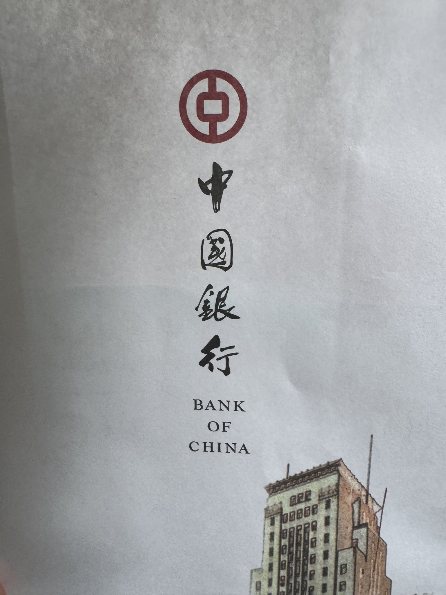

たたなこ
@tatanakots
中国银行真的有毛病
我要取现3000THB，预约没问题，CNY换THB（钞）没问题，一切网银能操作的都已经操作好了，3000THB（钞）躺在账户上，现金已经送到分行保险箱了
我去取现，先是和我说我未满18不能办理这个业务（我换钱都换好了为什么不让我取钱！）
但是我想先取钱，于是就把我妈叫过来了，不让我取那我监护人代办总行了吧（毕竟开卡这样也能开了）
但是，银行接下来
让我证明我妈是我妈
为此卡了二十多分钟，我们提交了随申办的电子户口本，银行说系统故障打不出来……
最后我妈发火了，让银行提供纸，签署声明文件，我签署委托书才得以取出我的钱
中国银行，垃圾！👎👎👎
